Relațiile lui Viète
Acest rezultat, care urmează să îți fie prezentat, stabilește legătura între coeficienții polinomului 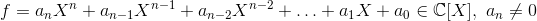 și rădăcinile sale 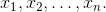
Mai precis, are loc următoarea teoremă:
Teorema P43: Relațiile lui Viète
Fie 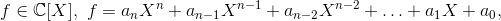 un polinom de 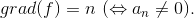
Numerele complexe 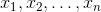 sunt rădăcinile polinomului  dacă și numai dacă sunt verificate următoarele relații:
dacă și numai dacă sunt verificate următoarele relații:
![\begin{cases} x_1+x_2+\dotsc+x_n=-\displaystyle\frac{a_{n-1}}{a_n}\\\\ x_1x_2+x_1x_3+\dotsc+x_{n-1}x_n=\displaystyle\frac{a_{n-2}}{a_n}\\\\ x_1x_2x_3+x_1x_2x_4+\dotsc+x_{n-2}x_{n-1}x_n=-\displaystyle\frac{a_{n-3}}{a_n}\\\\ \dotsc\dotsc\dotsc\dotsc\dotsc\dotsc\dotsc\dotsc\dotsc\dotsc\dotsc\dotsc\dotsc\\\\ x_1x_2\dotsc x_k+\dotsc=(-1)^k\cdot\displaystyle\frac{a_{n-k}}{a_n}\\\\ \dotsc\dotsc\dotsc\dotsc\dotsc\dotsc\dotsc\dotsc\dotsc\dotsc\dotsc\dotsc\dotsc\\\\ x_1x_2\dotsc x_n=(-1)^\cdot\displaystyle\frac{a_{0}}{a_n} \end{cases}](../media/webbooks/338/2262/images/equations/bpl09lg6nojsflhzuhlida==.gif)
Aceste relații au fost stabilite de François Viète în anul 1591 și se mai numesc și relații între rădăcini și coeficienți sau Relațiile lui Viète.
Reciproc, dacă se cunosc rădăcinile unui polinom de grad 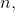 atunci se calculează sumele din relațiile lui Viète, adică:
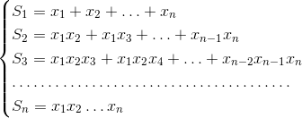
și se poate determina polinomul care are aceste rădăcini:
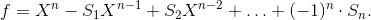
Particularizăm acum acest rezultat pentru ![f\in\mathbb{C}[X]](../media/webbooks/338/2262/images/equations/hsjx56mufi_uqc7l_jkruw==.gif) în cazul în care 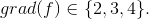
în cazul în care 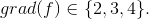
- Cazul 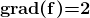
Pentru polinomul de grad doi, 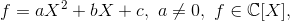 cu rădăcinile 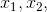 relațiile lui Viète se scriu astfel:
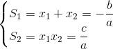
Reciproc, dacă 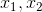 sunt rădăcinile polinomului , atunci 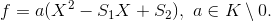
Observații:
- În acest caz, aceste formule ne permit să calculăm suma și produsul rădăcinilor ecuației de gradul al doilea, fără a cunoaște efectiv rădăcinile polinomului dat.
- Se pot calcula mintal soluțiile. Există ecuații de gradul al doilea cu rădăcini reale, care pot fi precizate dacă știm suma și produsul rădăcinilor.
- Ori de câte ori pentru o ecuație de gradul al doilea se precizează o relație între rădăcinile acesteia, atunci acestei relații i se asociază relațiile lui Viète.
Exemplu:
Fie polinomul de gradul doi, 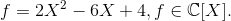 Relațiile lui Viète pentru acest polinom sunt:
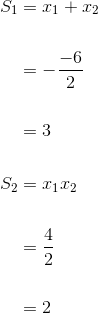
- Cazul 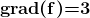
Pentru polinomul de grad trei, 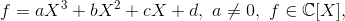 cu rădăcinile 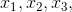 relațiile lui Viète se scriu astfel:
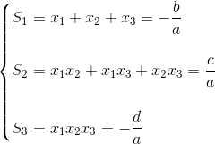
Reciproc, dacă 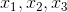 sunt rădăcinile polinomului , atunci 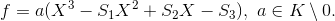
Exemplu:
Fie polinomul de gradul trei, 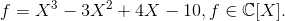 Relațiile lui Viète pentru acest polinom sunt:
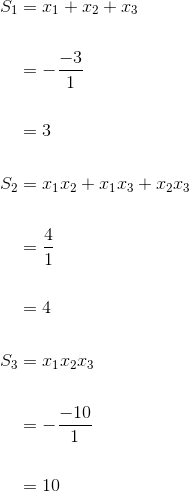
- Cazul 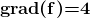
Pentru polinomul de grad patru, 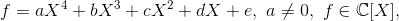 cu rădăcinile 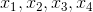 relațiile lui Viète se scriu astfel:
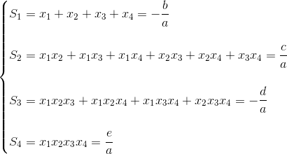
Reciproc, dacă sunt rădăcinile polinomului , atunci 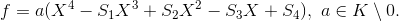
Exemplu:
Relațiile lui Viète pentru polinomul de gradul patru, 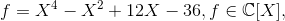 sunt:
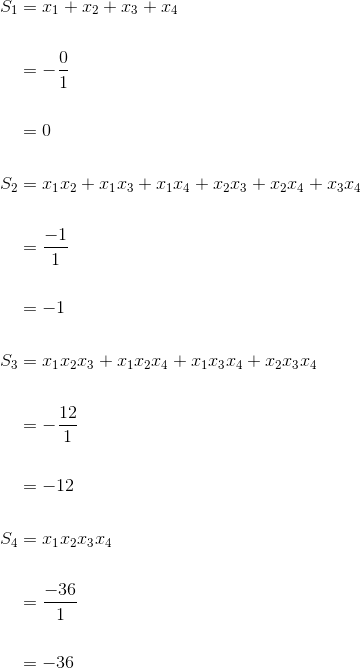
Relații importante, care îți vor fi utile la rezolvarea problemelor cu polinoame în care intervin relațiile lui Viète:
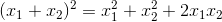
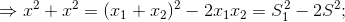
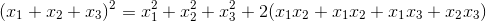
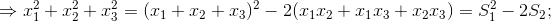